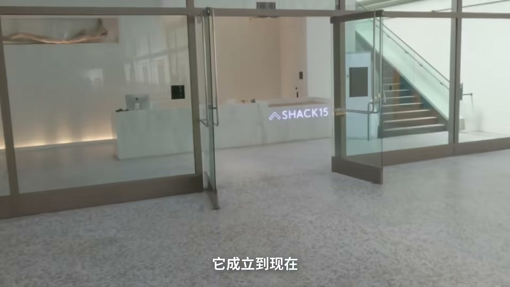
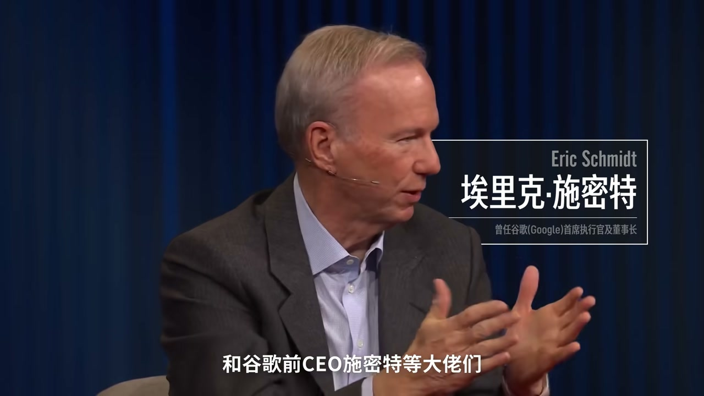
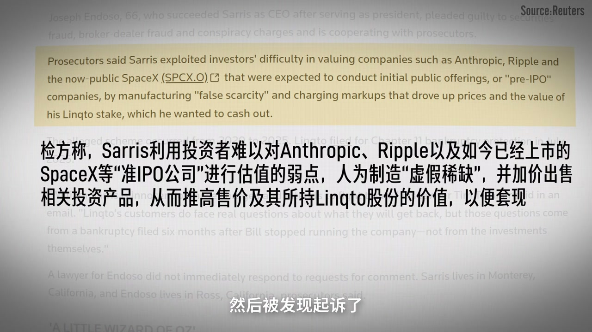
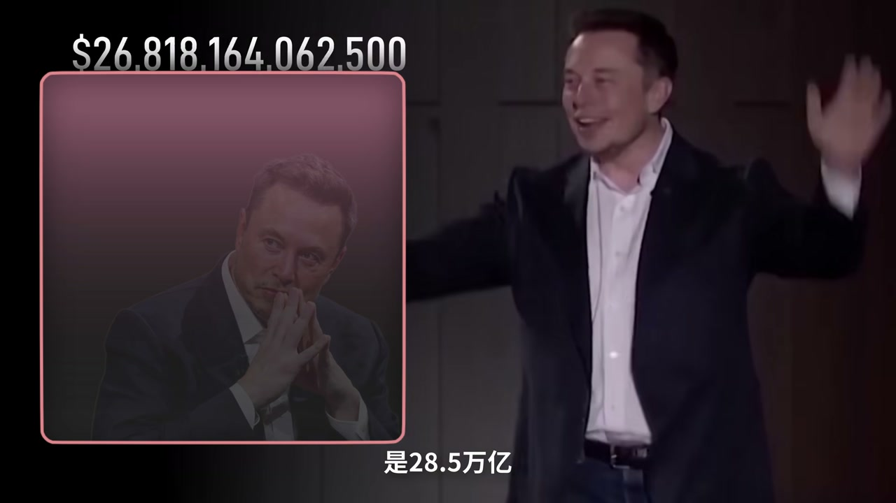

内容要点
视频追问：一家不造火箭、算力还得外购的公司，凭什么在资本叙事里「全打」马斯克式造物主光环、挑战最贵 AI 独角兽位置。作者梳理 Anthropic（Claude）从 OpenAI 安全路线出走，到四波资金（信仰、战略云、增长机构、IPO 抢跑），再把估值拆成对总潜在市场（TAM）——尤其是「一半工作可被 AI 替代」——的提前透支，并指出云厂商既当股东又当算力与渠道的绑定结构，以及「完美定价」下容错率极低。
ASR 校正：「安斯拉佩克/Andropec」→Anthropic；「阿摩黛」→Dario Amodei；「可乐/ClawCode」→Claude/Claude Code；「程旭元」→程序员；金额口播为约数。
知识结构
安全路线另起炉灶；硅谷信仰支票与云巨头战略入股。
Claude Code 等推动企业需求；估值看 TAM 而非当期利润。
亚马逊/谷歌多重身份；烧钱换故事，完美定价下必须持续狂飙。
2 万亿级叙事买的是「替代脑力劳动」期权；你要问的是故事证伪前，算力账单与收入曲线谁先撑不住。
00:00-06:00安全出走与四波燃料
Amodei 兄妹从 OpenAI 因安全理念分歧离开创立 Anthropic；公司仍年轻但估值叙事极陡。资金按心态分四波：为信仰充值的硅谷大佬、战略卡位的云与平台、怕错过增长的机构、以及 IPO 预期下的抢票资金。
Claude 系列（含偏编程的 Agent 能力）让「聊天搭子」变成可改代码跑测试的劳动力讨论，企业侧需求爆发，机构资金涌入。



06:00-12:30TAM 与饭碗：估值里的分母魔术
用收入倍数对比传统软件：市场愿为 Anthropic 流水支付极高倍数，因定价对象是总潜在市场而非当前利润；经营仍大额亏损。
叙事关键句：AI 可触及工作范围超过全球打工人总收入一半——若只吃传统软件盘则估值已贵，若吃工资盘则「上升空间」被重新定义。风险对称：算力订单是现付，故事可以后付。

12:30-18:26云三角与完美定价
亚马逊等可同时是股东、算力/云卖方与分销入口；谷歌亦有投资与 TPU/云上的互购结构——竞争归竞争，赚钱归赚钱。
资本不怕烧钱，怕故事被证伪；接近「完美定价」意味着未来几年几乎不能出错且营收需持续翻倍。眼前坎包括算力、竞争与监管等（口播展开）。收束投票：你希望这个盲盒开得快一点还是慢一点。
完整转录（228段）
以下文本由 Whisper 自动转录，可能存在识别误差；正文已按语境校正专有名词。
我创业是為了理想
我今天想和你聊的是
一家不造火箭
不鋪衛星
連訓練算力
都要跟別人買的公司
憑什麼能全打馬斯克
狡替奧特曼
成為全球最貴的AI獨教授
錢從哪來
誰在狂歡
誰又會買單
即使你不關心AI新聞
也別滑走
因為看完你會明白
資本究竟是怎麼把我們所有人的飯碗
算進這家公司的估值里的
PC Cloud是不是很多人的印象是
好像很厲害
但是有的大家很遠
還有動不動就封號
要么就是創始人在百度工作過
沒錯啊
阿摩黛呢
2014年在百度研究語音識別
2015年跳槽到了谷歌
再隔了一年
她和妹妹丹尼拉
一起又被挖到了剛成立的OpenAI
阿摩黛來這兒
就是在安全部門工作
你記住安全這倆字
這可以說是阿摩黛
一直到今天的執念
或者說是
她在OpenAI一路做到了副總裁
但因為和奧托曼
就是在這個AI安全的理念上
越吵越凶
兄妹倆在2021年拉著一夥人
夫妻出走
Andropec就此單身了
你看啊
到了今天
這家公司也才成立了短短5年
那他們的估值
怎麼就飆得比馬刺客的火箭還要絲滑呢
你看啊
它的融資名單可以說是眼花繚亂
不僅谷歌這種對價都在里邊
甚至還有什麼
加拿大安達略省的教室養老金
教室養老金
那這麼多八幹子打不著的資本
齊聚一桌
究竟揣的什麼心思呢
咱們今天可不聊哭到的ABCD一輪
咱們就按下注心態來給你捋清楚
趁你這2萬億估值火箭的燃itage
其實就是四種錢
第一波呢
是為信仰充值的硅谷大佬
Andropec剛成立的時候
看到的還沒個影子呢
但就是靠著阿摩黛兄妹高舉的
AI安全旗幟
直接吸引了Skype創始人塔林
Facebook聯合創始人達斯汀
我
和谷歌前CU生命特等大佬們
直接砸掉了1.2
看到的甚至還沒有亮相
An
極其狠辣的商業條款
這個也是重點
後面我們細講
到了2024年
Ansopec的估值已經漲到了大約
所以第三波
是怕錯過增長的機構資本
2025年2月
Claw Code震撼發布
AI不再只是個聊天搭子了
它能擅守寫代碼
改BUG跑測試了
大模型之前的下一步
從Charbot走到了Agent
那段時間大家討論的最多的就是
程旭元的天塌了
企業的需求也跟著大爆發
Ansopec在企業市場
直接反超OpenAI
在企業市場上
就像是在Code上的
一般的企業
Ansopec在企業市場
直接反超OpenAI
這下各種機構資本
到這裡三波燃料一加
你是不是感覺到
轎子已經抬的差不多了
所以最後一波
這波技術似乎掃射的
不僅是程旭元和軟件公司
而隨著IPO的聲音越來越大
所有人都Catch了
提前搶票模式
但是到這咱們可得理智一點想想
截止到7月底
它的年化收入大概是650億美元
2萬億的價拿
憑什麼撐得住呢
經常IPO的朋友都知道
想要固執長得猛
那你的故事得說得很
還記得開頭小李說的嗎
他的固執巴開一看
里面竟然是大家的飯碗
所以接下來
咱們就聊聊那個
和你我息息相關的
AI恐慌論
是不是很魔幻
關於AI到底是會拯救人類
還是毀滅人類
這群最懂AI的人
已經吵翻天了
而且
給你律明白這個邏輯
首先咱們得承認
安斯拉佩克絕對不是
倍數也就是7到8倍
微軟大概也就12倍
等於說在華爾街眼裡
大家願意花31塊錢
去買安斯拉佩克帳面上
1塊錢的流水
而且這還是營收
不是利潤
2015年安斯拉佩克全年收入
是46億美元
雖然已經是上年的12倍了
但經營虧損超過80億美元
所以安斯拉佩克的估值邏輯
絕不限於現在賺了多少錢
他的估值看的是這個詞
TAM
總潛在 Fresh Market
就是不看它現在有多少市場
...
有點抽象
就用咱們講過的SpaceX
來複習類比一下
那複習完了
咱們再來看看今天的主角
安斯拉佩克
他就更狠了
按照安斯拉佩克的預言
AI可以完成的全部工作範圍
已經超過了全球打工人總收入的一半
這也是為什麼阿莫戴一再公開說
50%的工作會被AI幹掉
你看這個敘事就很妙了
如果安斯拉佩克只是吃掉
全球傳統的軟件市場
那整個盤子稱自己就3萬億
但他現在張口就要2萬億的估值
等於事還沒成
就已經提前透支了66.7%的錢
這賬誰算都會覺得太貴了
我來的上升空間還大得嚇人呢
那這個分母魔術你學會了嗎
這個故事風險點也恰恰在這
我為了這個未來
他已經牽強了天價的算力訂單
故事可以慢慢對付
但賬單可不會等他把餅畫完
而綁在同一條船上的
就是前面的
與此同時
企業級客戶甚至不用找安斯拉佩克簽合同
在亞馬遜就能直接下單可樂的
你看亞馬遜在這場遊戲里
同時扮演著股東購運商分銷商三個身份
而谷歌就更魔幻了
嚴格來說谷歌的Gameline跟可樂是對價
但谷歌不僅僅能100億美元過去
還承諾最高投400億
那作為交換呢
安斯拉佩克也是瘋狂採購谷歌的TPU芯片
甚至鎖定了2017年的下一代超級算力
同樣可樂也在谷歌雲上架了
競爭歸競爭
賺錢為賺錢
這似乎是一種很新的
資本市場從來不怕你瘋狂燒錢
怕的是你講的那個故事被證偽
而安斯拉佩克的固執
已經越來越接近那個故事被完美實現的狀態
這種狀態有個名字叫Price for Perfection
完美定價
意思是價格已經把最樂觀的未來提前算進去了
而想要撐住這2萬億
安斯拉佩克未來幾年不僅不能出錯
他的營收還必須以每年翻幾倍的速度一路狂飆
但現實的物價不僅是最高
但現實的物理世界
真的允許這麼完美的劇本發生嗎
要撐住這麼高的固執
他的眼前就有三道坎
這才是安斯拉佩克必須回答的問題
其實這種玩法花姐不是沒見過
已經無數普通人被悄悄綁在這條增長曲線上的未來預期
或許這才是這個2萬億盲盒真正殘酷的地方
那屏幕前的你又怎麼看呢
是希望它開的快一點還是慢一點呢
關於安斯拉佩克這家公司
你覺得2萬億的估值合理嗎
告訴我你的想法吧
A 合理
你認為AI會快速取代腦力勞動
B 不合理
你覺得AI依然存在許多局限性
或者有其他政治著件
請在我的評論區給我留言吧
大家好我是小李
我們下期再見
拜拜